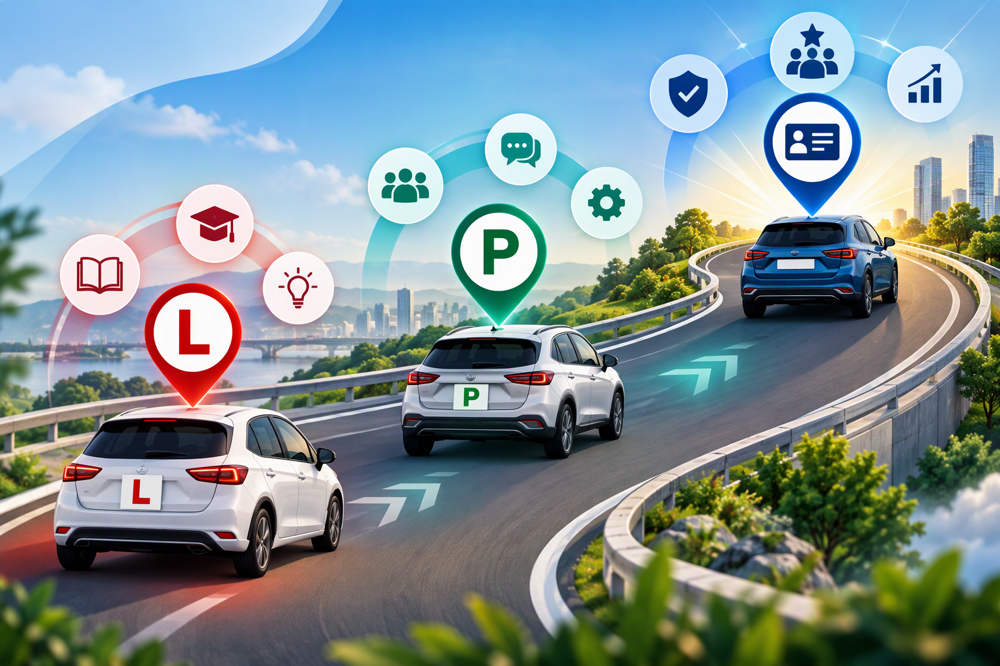

CAPACITY
Reduce repeatable effort and redirect time to higher-value change work.
AI CULTURE CLUB | CHANGE MANAGEMENT
Create more capacity, better insight and stronger adoption, while keeping human judgement at the centre.
Reduce repeatable effort and redirect time to higher-value change work.
Use AI and change data to understand impact, readiness and adoption better.
Challenge, contextualise, influence and remain accountable for outcomes.
Measure success by whether change is understood, adopted and sustained.
OUR JOURNEY
Hover or click the licence markers to explore how we progress.
